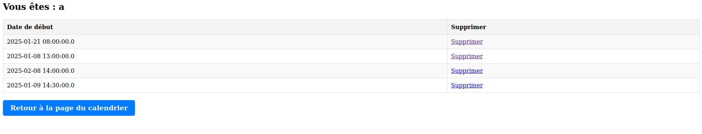
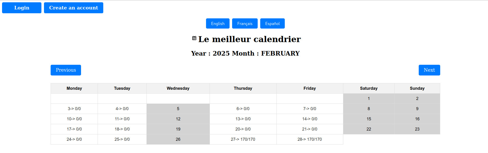
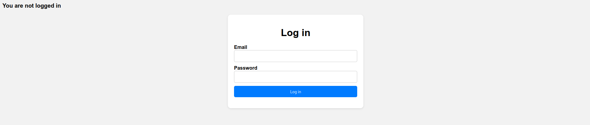
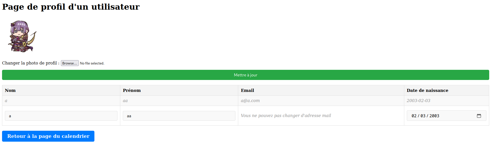

.
Voici mon projet Spring : un site de réservation de rendez-vous modulable. La page principale est dédiée à l'affichage d'un calendrier, dans lequel il est possible de cliquer sur chaque jour pour prendre un rendez-vous.
D'un point de vue technique, il est possible de se connecter et de se déconnecter grâce à une base de données. On peut également enregistrer des rendez-vous et recevoir un mail lors de la prise d'un rendez-vous. Une page est également dédiée à la personnalisation du profil. L'administrateur a la possibilité de consulter tous les rendez-vous pris, tandis que les clients peuvent accéder aux leurs.
-> Créneaux réserver par un utilisateur
-> Calendrier
-> Connexion
-> Profil
